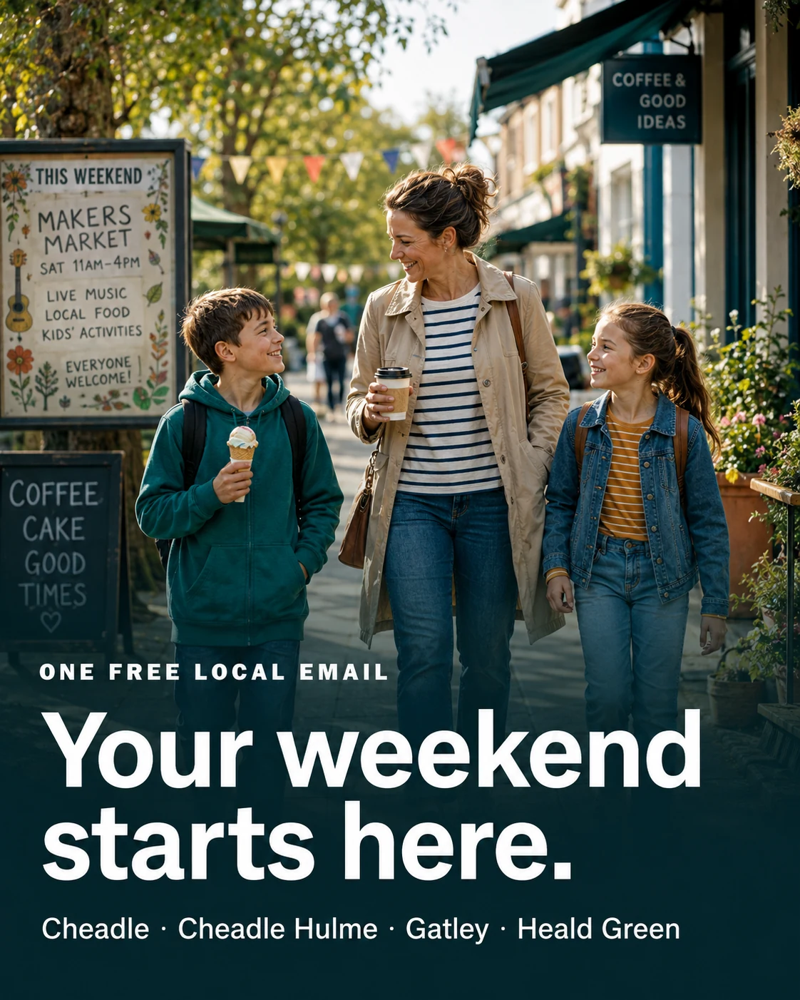

Help readers
Find worthwhile plans, practical updates and money-saving ideas without doing all the searching.
SK8 Scoop helps people make better local decisions—and helps suitable local organisations reach a relevant audience without blurring advertising and editorial.

Events sit on organiser pages, roadworks appear elsewhere, offers vanish into social feeds and good local discoveries depend on who happened to post that day.
SK8 Scoop brings the best of that into one predictable weekly email for Cheadle, Cheadle Hulme, Gatley, Heald Green and nearby SK8.
“One useful Friday email that helps local people plan, save and know what is changing.”Useful first. Local second. Cheeky third. Accurate always.
Find worthwhile plans, practical updates and money-saving ideas without doing all the searching.
Label paid placements and keep commercial opportunity separate from editorial selection.
Create useful, measurable partnerships between readers and suitable local organisations.
Free every Friday. No spam. Easy to leave.